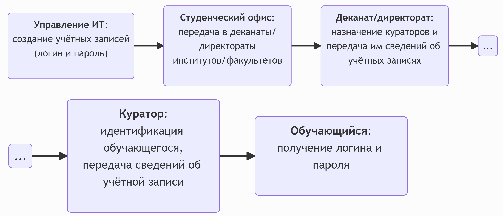
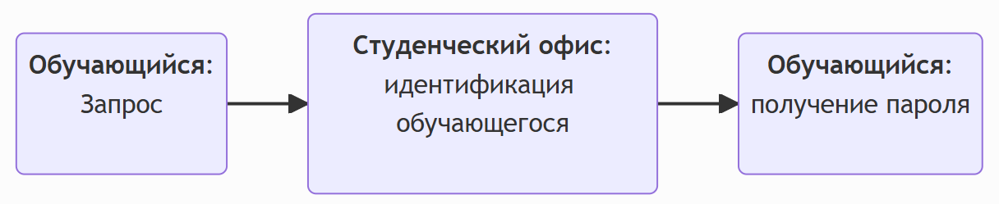
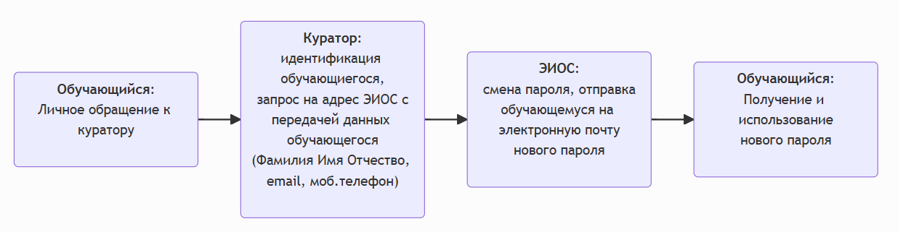
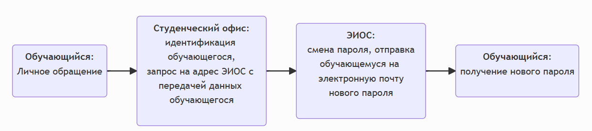
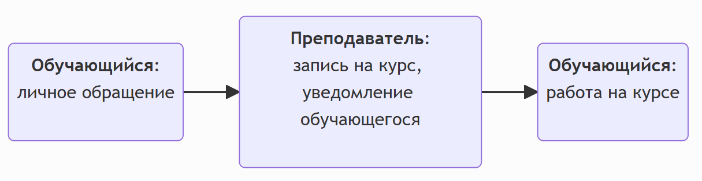
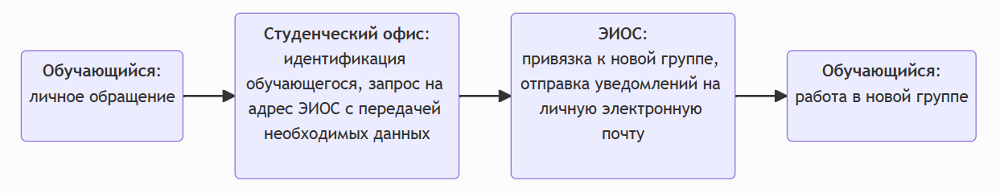
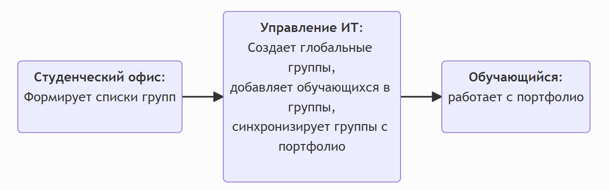
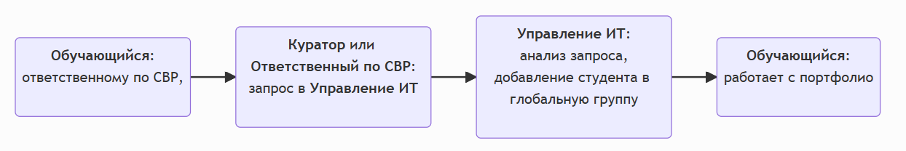

Обучающемуся
1. Учётные записи обучающихся
1.1 Получение учётной записи обучающимся 1-го курса:

- Подразделение университета ответственное за ведение реестра учётных записей обучающихся создаёт их и передаёт в студенческий офис.
- Студенческий офис передаёт полученные сведения об учётных записях деканам/директорам факультетов/институтов, которые уже передают списки кураторам академических групп.
- Кураторы академических групп проводят идентификацию обучающихся (по документу, подтверждающему личность) и передают персонально каждому студенту своей группы сведения об учётной записи.
- Обучающийся получает от куратора сведения о своей учётной записи и уже персонально отвечает за их сохранность.
1.2 Повторная выдача сведений об учётной записи:

- В случае потери сведений об учётной записи (логин, пароль) обучающемуся необходимо лично обратиться в студенческий офис.
- Студенческий офис проводит идентификацию обучающегося (по документу, подтверждающему личность).
- После идентификации обучающегося студенческий офис повторно выдаёт сведения об учётной записи.
1.3 Смена пароля:
Вариант 1 (с помощью куратора)

- В случае необходимости смены пароля обучающемуся необходимо лично обратиться к своему куратору.
- Куратор проводит идентификацию обучающегося (по документу, подтверждающему личность).
- После идентификации обучающегося куратор отправляет запрос на смену пароля на адрес
СУО ЭИОС университета (%eios-email%) с передачей ФИО обучающегося, номера телефона и его личной электронной почты. - Подразделение университета, отвечающее за работу
СУО ЭИОС устанавливает новый пароль и отправляет сведения об учётной записи на личную электронную почту обучающегося.
Вариант 2 (с помощью специалиста студ.офиса)

- В случае необходимости смены пароля обучающемуся необходимо лично обратиться в студенческий офис.
- Студенческий офис проводит идентификацию обучающегося (по документу, подтверждающему личность).
- После идентификации обучающегося студенческий офис отправляет запрос на адрес
СУО ЭИОС университета (%eios-email%) с передачей ФИО обучающегося, номера телефона и его личной электронной почты. - Подразделение университета, отвечающее за работу
СУО ЭИОС устанавливает новый пароль и отправляет сведения об учётной записи на личную электронную почту обучающегося.
2. Доступ к курсу

- Обратиться к преподавателю с просьбой о доступе к курсу.
- Преподаватель подключает обучающихся одним из способов, который указан в инструкциях для преподавателя.
- Обучающемуся необходимо дождаться завершения процедуры организации доступа к курсу.
3. Смена группы

- При смене учебной группы обучающемуся необходимо обратиться в студенческий офис
- Студенческий офис проводит идентификацию обучающегося и формирует письмо-запрос на адрес
СУО ЭИОС (eios@mauniver.ru) о переводе обучающегося в другую учебную группу. При этом в письме обязательно указываются следующие данные: ФИО обучающегося, исходная группа и целевая группа. - Подразделение университета, отвечающее за работу
СУО ЭИОС меняет привязку обучающегося к академической группе и уведомляет его об этом с использованием почты, указанной у обучающегся в профиле ЭИОС.
4. Доступ к портфолио
Вариант 1 (студенты 1-го курса, в начале учебного года)

- Студенческий офис для всех студенто, поступивших на 1-й курс формирует списки групп и передает их в подразделение университета ответственное за ведение реестра учётных записей обучающихся (Управление ИТ).
- Сотрудники Управление ИТ создают в ЭИОС университета глобальные группы, добавляют в них обучающихся и синхронизируют эти группы с портфолио.
- После этого обучающийся может загружать свои достижения в портфолио, которое доступно из личного кабинета.
Вариант 2 (если нет доступа к портфолио)

- В случае отсутствия доступа к портфолио обукчющемуся необходимо обратиться к своему куратору (или ответсвенному по СВР) с запросом на доступ к портфолио.
- Куратор делает запрос на адрес ЭИОС "МАУ" (eios@mauniver.ru) со своей личной корпоративной почты с указанием полного ФИО обучающегося и названия академической группы строго в соответствии с именованием групп в расписании.
- Полученный запрос анализируется сотрудниками ИТ и в случае одобрения добавляют указанного в запросе обучающегося в глобальную группу.
- После этого обучающийся может загружать свои достижения в портфолио.